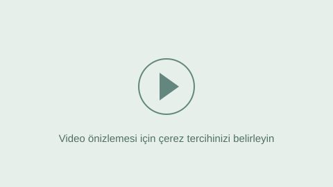

Sazından, sesinden.
Aşık Ceyhani’nin türküleri ve sazıyla bıraktığı hatıralar.
43 video

Bu aramaya uygun video bulunamadı.
Videoları seçerek oynatmak için JavaScript’i etkinleştirin veya YouTube kanalını ziyaret edin.
ŞİİR